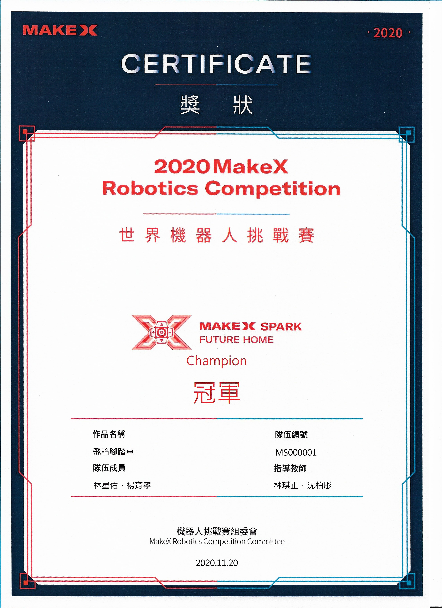
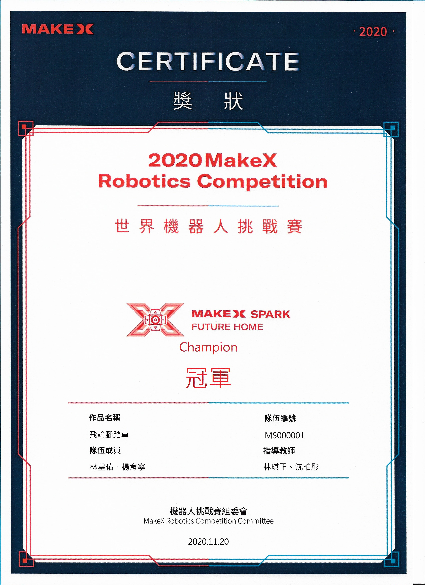

MakeX世界機器人挑戰賽

此競賽以《居家健康》延伸自全球賽季年度主題《未來之家》為主題。2020 年初因為冠狀病毒肆虐，造成全球重大的影響難以估計， 成為人類歷史上影響最深遠的公衛事件，此時是全人類共同省思如何更有效利用科技提升全民健康的時刻。 作品以Halocode 偵測體感動作並測量輪胎一圈的長度(圓周長)+應用人工智慧機器學習來判讀攝取食物的熱量(機器學習)+mBlok軟體撰寫消耗熱量動畫程式， 設計出一款「飛輪腳踏車」，榮獲冠軍。

此競賽以《居家健康》延伸自全球賽季年度主題《未來之家》為主題。2020 年初因為冠狀病毒肆虐，造成全球重大的影響難以估計， 成為人類歷史上影響最深遠的公衛事件，此時是全人類共同省思如何更有效利用科技提升全民健康的時刻。 作品以Halocode 偵測體感動作並測量輪胎一圈的長度(圓周長)+應用人工智慧機器學習來判讀攝取食物的熱量(機器學習)+mBlok軟體撰寫消耗熱量動畫程式， 設計出一款「飛輪腳踏車」，榮獲冠軍。
